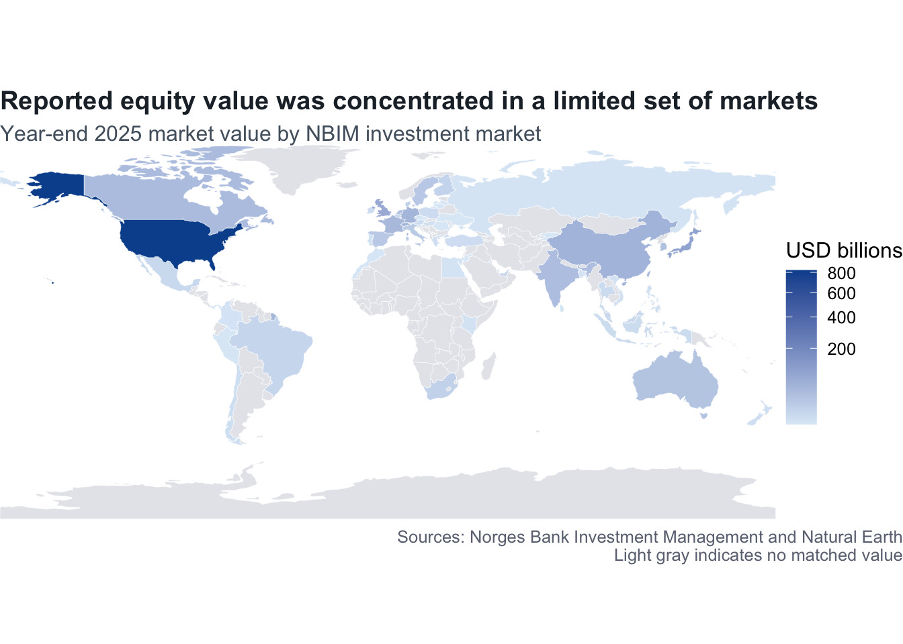

library(tidyverse)
gpfg <- read_csv("data/gpfg.csv")
world <- read_csv("data/world_boundaries.csv")10 Mapping
10.1 Learning objectives
By the end of this chapter, you should be able to:
- prepare one value per place;
- match place names to a boundary table;
- check unmatched names; and
- draw a simple choropleth map with
ggplot2.
10.2 When is a map useful?
A ranked bar chart is best for exact country comparisons. A map is useful when the geographic pattern itself matters—for example, whether high values cluster in one region.
To keep the lesson within the tidyverse, the course provides a prepared CSV of world boundary coordinates. The coordinates come from Natural Earth; their reproducible preparation is recorded in scripts/prepare_map_boundaries.R.
Continue in the same project
Open djr.Rproj and create 08-mapping.Rmd. Reuse data/gpfg.csv, then download world_boundaries.csv and save it in data/.
10.3 Prepare one value per place
The holdings file has many rows per market, but the map needs one value per market:
country_summary <- gpfg |>
group_by(country) |>
summarise(market_value_usd = sum(market_value_usd)) |>
mutate(market_value_usd_billions = market_value_usd / 1000000000)One row now represents one investment market.
10.4 Make place names match
The holdings data and the boundary data do not always spell names in the same way. Keep the original country column and create a separate name for the join:
country_summary <- country_summary |>
mutate(
map_name = recode(
country,
"Russia" = "Russian Federation",
"South Korea" = "Republic of Korea",
"Türkiye" = "Turkey"
)
)recode() replaces only the listed values. A separate map_name column makes the changes visible.
10.5 Check unmatched names
Create a short table of boundary names, then use the familiar anti_join():
map_names <- world |>
distinct(name_long)
country_summary |>
anti_join(map_names, by = c("map_name" = "name_long"))An empty result means every source market has a matching boundary name. If a name appears, investigate it before making the map.
10.6 Join the values to the boundaries
Keep the boundary coordinates on the left so places without a reported value remain in the map:
world_holdings <- world |>
left_join(
country_summary,
by = c("name_long" = "map_name")
)Each country has many coordinate rows describing its outline. The joined market value is repeated across those coordinate rows so ggplot2 can fill the whole shape.
10.7 Draw the map
geom_polygon() connects the coordinates belonging to the same polygon_group. Map the prepared market value to fill:
ggplot(
world_holdings,
aes(
x = longitude,
y = latitude,
group = polygon_group,
fill = market_value_usd_billions
)
) +
geom_polygon(color = "white", linewidth = 0.1) +
coord_quickmap(expand = FALSE) +
scale_fill_gradient(
low = "#DEEBF7",
high = "#08519C",
trans = "sqrt",
na.value = "#E5E7EB"
) +
labs(
title = "Reported equity value was concentrated in a limited set of markets",
subtitle = "Year-end 2025 market value by NBIM investment market",
fill = "USD billions",
caption = "Sources: Norges Bank Investment Management and Natural Earth\nLight gray indicates no matched value"
) +
theme_void(base_size = 12) +
theme(
legend.position = "right",
plot.title = element_text(face = "bold", color = "#1F2933"),
plot.subtitle = element_text(color = "#52606D"),
plot.caption = element_text(color = "#6B7280"),
plot.title.position = "plot",
plot.caption.position = "plot"
)
coord_quickmap() keeps the world from being stretched incorrectly. scale_fill_gradient() uses a light-to-dark sequential blue scale: darker color means a larger reported value. The square-root transformation prevents the largest market from making most other values visually indistinguishable; the legend still reports the original USD-billions values. White borders keep neighboring polygons distinct without dominating the data.
Places with no matched value appear light gray. Gray means “no matched value in this table,” not necessarily “no economic connection.”
10.8 Interpret the map carefully
The map uses NBIM’s investment-market column. It does not necessarily show a company’s place of incorporation, where its workers are located, or where its revenue is earned. Boundary data also contain naming and political choices, so record the boundary source and explain consequential name changes.
10.9 Practice
Create a map for another year from the ten-year file. Submit:
- the country summary;
- the unmatched-name result;
- the map;
- a ranked table of the five largest values; and
- a caption explaining what the colors and gray areas mean.
10.10 Takeaways
| Function | What it does |
|---|---|
distinct() |
Creates a table of unique boundary names |
recode() |
Replaces selected place names explicitly |
anti_join() |
Finds source places without a boundary match |
left_join() |
Adds the data values to boundary coordinates |
geom_polygon() |
Draws filled shapes from coordinate rows |
coord_quickmap() |
Uses a map-friendly aspect ratio |
scale_fill_gradient() |
Adds a continuous light-to-dark color scale |
Want more control?
This first map uses only the arguments needed to connect coordinates and values. The official ggplot2 reference documents more options for borders, coordinates, and color scales.